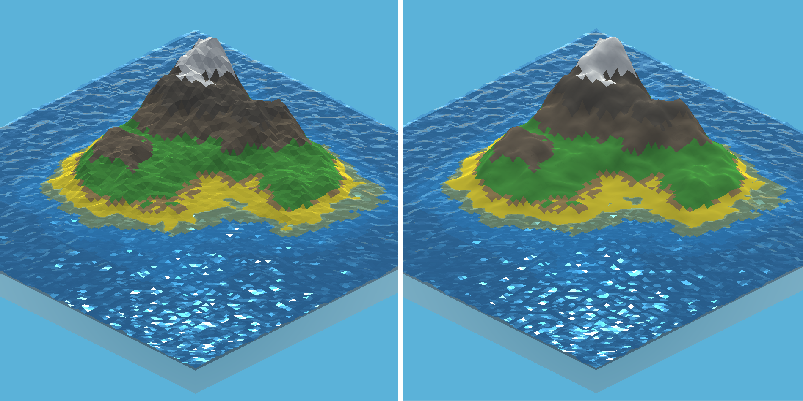

Dev Log: Poly Solace
September 21st, 2021:
Revived ProjectI have returned to this project after a year long hiatus. My vision for the game has changed since the last time I talked about it. My new vision revolves around Virtual Reality (VR). I wanted to make this game a top down experience from the very beginning, and I am returning to this idea by switching the platform to VR. Poly Solace will now be a "God" sandbox game where the user hovers over the world in VR and be able to create/destroy the island in front of them. The user can create a small village and help it grow in size, or destroy it in spectacular fasion. I will upload some GIFs in the future with the new look when I have the time.
November 13th, 2020:
Temporary BreakIt's been awhile since I left an update on this game. With classes and the Covid-19 pandemic I have found myself having no time to work on this project at the moment. I am trying to get outside as much as possible so I get some exercise, and I'm just enjoying my time with friends and family while I can. My motivation for this project is slowly deminishing, so I'll keep you updated on whether or not it will be continued.
May 19th, 2020:
Back on Track with More AdditionsNow that classes have ended for me, I have returned to a more normal schedule of working on the game. I now put in a couple hours a week now adding and improving features of the game.
New Items/Improvements:- 1 new original tree models
- 2 new fence models
- 1 new wooden platform
- Finished skybox with the sun, stars, and moon
- Scalable chunk system for map generation (allows for more optimization options)
- Tweaked Water and Terrain shaders for better colors
- Implementing billboard impostors
- Improving the settings menu
- Building/Placing objects
The main issue I am having right now is optimization. The game currently has thousands of objects around the map, while most of them are disabled and enabled when approached, this brings up another issue. Larger objects like trees can't just be rendered when you're within a certain distance. This would cause an extremely noticable popup effect and a very boring and bland map if you look in the distance (nothing but the terrain and water would be rendered). To limit the total number of vertices on the map I have three main options: a chunk based level of detail system, low level of detail objects, or billboard impostors.
I believe implementing a chunk based low level of detail(LOD) system and a billboard impostor system will work best. The idea behind the chunk system will only effect the terrain mesh. The further away the terrain chunk is from the player, the lower detail is needed for displaying it in the distance. The map is already divided into 9x9 chunks, so I can introduce different LODs to those chunks based on distance from the player. This will cut back on a large amount of vertices and reduce the stress for rendering the scene.
The billboard impostor solution is extremely complex but has HUGE performance boosting potential. Billboard impostors require a texture atlas of multiple images of the same object but at different angles. These images are used on a flat 4 vertice mesh that always faces the camera. Depending on the viewing angle of the player with the textured mesh, it will use the appropriate image of the object to mimic the viewing of the real object. Depending on the texture resolution and the transition between different viewing angles, the billboard impostor can look just as good as a full rendering of the 3D object but have 100x less vertices.
In short, I am almost done implementing the different levels of LOD for the terrain chunks, and I am researching ways to create my own billboard impostor for every object.

April 8th, 2020:
A Ton of AdditionsPoly Solace is coming along. I am taking a slight break right now from it to focus on classes. While initially on Spring break from college I had lots of free time to add stuff to the game, so here is just a list of additions.
- 3 new original tree models
- Original campfire model w/ particle effects
- Blowing leaves shader for trees and bushes
- WIP pause and settings menu
- WIP object placement system
- Added roaming cows and bunnies
- Day night cycle
- WIP skybox with the sun, stars, and moon
- Music system
- Post processing effects

February 16th, 2020:
Adding Plants/Youtube ChannelI just got over the flu and have taken a temporary break on the project. Now that I feel a lot better, I have begun working on the project again. I am working on a system that disperses plants/objects around the map. The system is very crude and doesn't really work at all, but I began working on it, so I guess that is something. I have been fixing up other things like shaders and added a little camera controller for the game. My main focus is getting the map generation to look fantastic because the flow of the game will heavily revolve around the map.
As a side note, I have recorded a video for my Youtube channel that I believe I am going to make. I will post more in-depth video dev logs and try to build up an audience for the game. Without an audience, no one will know about the game and it will have a sad release, so hopefully I can make some interesting Youtube videos to hype up the production of the game. I might even start a Patreon too so I can get some financial support. I am gonna have less time to work on the project because of the six classes I am taking and my two jobs at school. I will still finish this game though! I will most likely add links to my Youtube videos just to keep track of where they go in the overall dev log updates on my website.
February 5th, 2020:
Larger Terrain and a Main MenuI have implemented a lot of new features since my last update. The map is now split into chunks so I can have larger maps in general(256 X 256). I have also created a little main menu to make it feel more like a game at the moment. Finally, I added a very simple and crude user camera controller. The user can now use E and Q to rotate the map, use the scroll wheel to zoom in and out, and use W,A,S,D to move the camera. I still have a ton of issues with the shaders, but that has been put off to the side for now. Currently, I am working on adding plants to the world. I am debating whether or not to procedurally generate the plants too, but I will get a working layout of the spawning of the plants first.

January 25th, 2020:
Revamped Water and Terrain
With this update, I have significantly improved the runtime of the game! Through some quick searches online, it is possible to recreate the low-poly look through shaders. With this new information, I
got to work implementing a low-poly shader from mixing and mashing multiple tutorials online. With a shader, I am able to decrease the overall vector count for each mesh by basically half. The original way I
implemented the low-poly look was through doubling the vector count and not sharing any vectors for each mesh triangle (this tells the GPU whether or not to blend the colors or lighting effects). Now with a decreased vector count
I am able to drastically increase the size of the map and keep the performance up. As I was implementing this new low-poly shader for the terrain, I learned that I could actually displace the vectors through the shader itself also!
Now I can recreate the same water effect with just a single plane using this new low-poly water shader I created.
While creating the shaders, I wasn't able to recreate the original color scheme I had before. The terrain is a little too dark now and the water isn't exactly how I want it just yet either. This is what I will be working
on next.

January 16th, 2020:
Flat Shaded TerrainJust a quick little update to the game. I added a flat shading "low-poly" look to the terrain generation. I love the low-poly look in games and really hope to bring that aesthetic to my game as much as possible. Below is just a little comparison between the two different looks.

January 15th, 2020:
Working on Terrain GenerationWhile on break, I have found myself hardly working on this project and just enjoying my extra freetime while I have it. I have worked on this project from time to time when I got bored and implemented a better looking terrain generator. I followed a couple youtube videos and did some personal modifications to what I already had to create the terrain generator. I am pretty happy with it at the moment and wish to expand the size of it and make it more "low-poly" than it is now, but this is definitely a start.

December 29th, 2019:
Winter BreakI am currently on winter break for college and haven't had much of a drive to work on projects. It is nice to just relax after such a stressful semester. I have tons of free-time at the moment and when I am in the mood, I will eventually work on this project some more and add some new things. Currently, I was thinking of fleshing out the map generator and making it a more interesting by adding different forms of noise to the map. I have found a way to implement a fall-off map to make the whole chunk of land into an island. I have run into the issue of the water being too demanding on the game, so large maps are impossible to have at the moment. I might have to delve into multithreading again to get it to work on a larger scale.
November 26th, 2019:
Created a simple procedurally generated worldI was beginning to get tired of working in the 2D realm of game design. I have always loved the look of low poly games and how vibrant they can be, so I decided to take a shot a it myself. Since I seem to be jumping between different projects left and right, I am officially going to set a schedule for this project. I will spend a few hours a week or more on this project and actually finish it. The game currently stands at a point where you can randomly generate a chunk of low poly land with moving water. I am going to implement more realistic generation in terrain by fiddling around with the perlin noise. I would like to add: biomes, trees, animals, rivers, lakes, and small foliage. This game is going to be able building a nice little low poly world and watching it evolve over time.